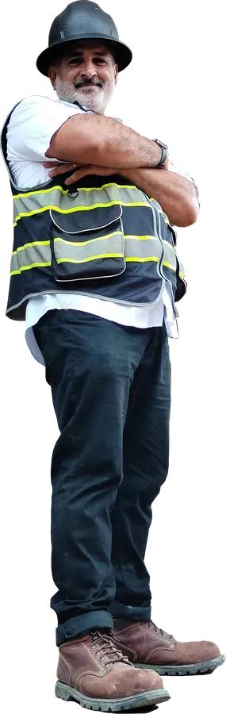
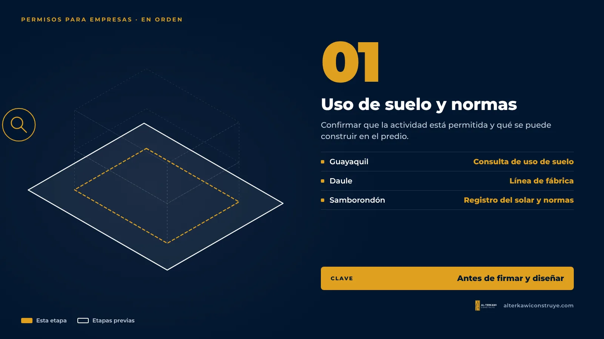
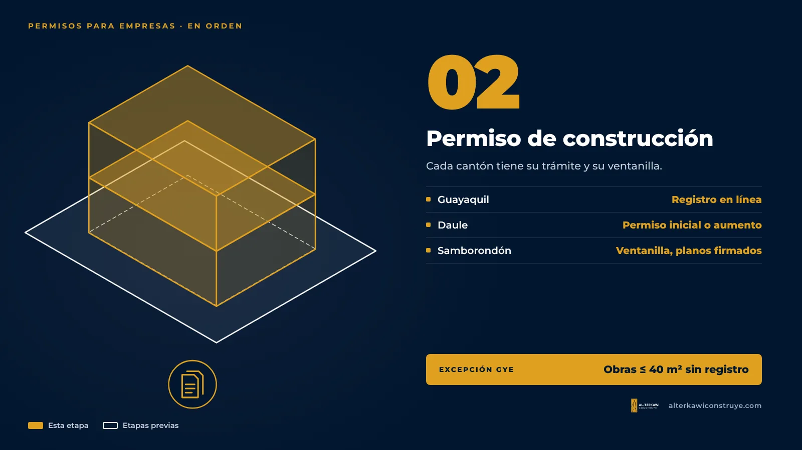
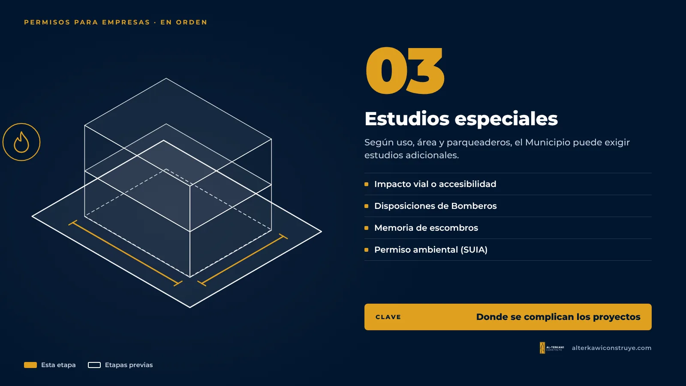
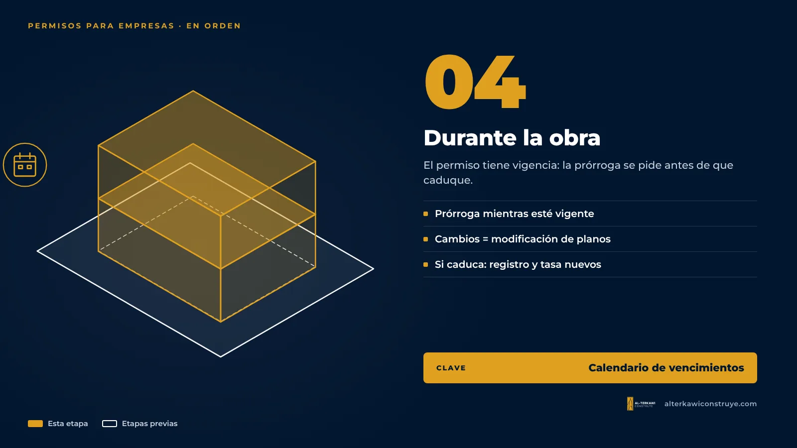
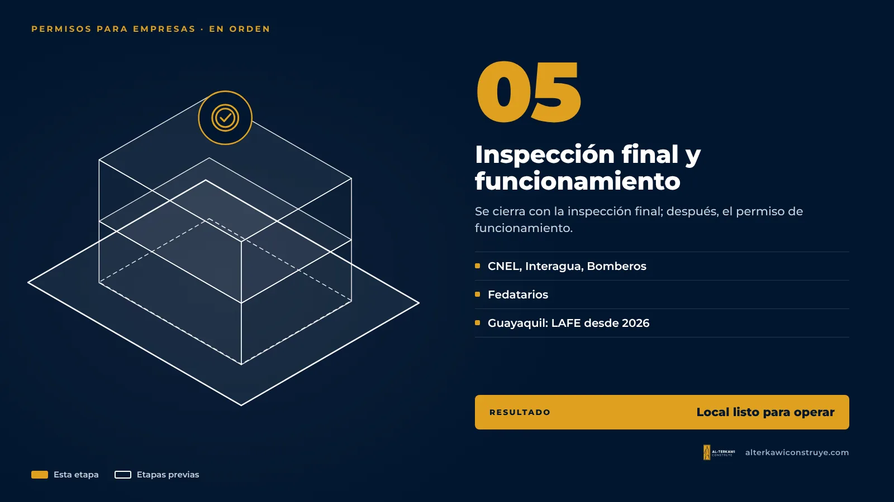

Permisos de construcción para empresas en Guayaquil, Daule y Samborondón: guía 2026

Cuando una empresa decide abrir una sucursal, remodelar una oficina o construir una bodega, la conversación suele empezar por el diseño y el presupuesto de obra. El permiso aparece después, y muchas veces tarde. En proyectos corporativos eso cuesta caro: el local está arrendado, la inauguración tiene fecha y el expediente vuelve del Municipio con observaciones.
Esta guía resume qué trámites piden los tres cantones donde trabajamos, en qué orden conviene hacerlos y en qué puntos se detienen la mayoría de proyectos.
1. Antes de diseñar: uso de suelo y normas del predio

El primer paso es confirmar que la actividad está permitida en ese predio y qué se puede construir ahí.
- Guayaquil: la Consulta de Uso de Suelo se hace en línea en el portal municipal e indica si la actividad es compatible y qué condiciones mínimas debe cumplir el local.
- Daule: el certificado de línea de fábrica define las condiciones del predio para construir.
- Samborondón: se solicita el registro del solar y las normas de edificación. En urbanizaciones, además, los planos pasan por la asociación de propietarios.
Si el predio está registrado como residencial y usted quiere un local u oficina, hay que planificar el cambio de uso desde el inicio.
2. El permiso de construcción

- Guayaquil: el Registro de Construcción se ingresa en línea, por tipo de obra (inicial, aumento, remodelación o modificación de planos). Las obras menores de hasta 40 m² dentro del predio no lo requieren.
- Daule: permiso de construcción inicial o por aumento, con formulario del INEC y planos digitales. Para obras de 40 a 250 m² en predios urbanos existe un permiso simplificado de otorgamiento inmediato.
- Samborondón: registro de construcción en ventanilla, con planos de todas las especialidades firmados y cartas de responsabilidad técnica notariadas.
Vea el detalle para Guayaquil en Registro de Construcción para locales comerciales y oficinas y para los otros cantones en Permisos de construcción en Daule y Samborondón.
3. Los estudios especiales que suelen pedir a las empresas

Aquí es donde se complican los proyectos corporativos. Según el uso, el área y los parqueaderos, el Municipio puede exigir:
- Estudio de impacto vial o análisis de accesibilidad: en Guayaquil, por ejemplo, un edificio comercial nuevo con 15 o más parqueos necesita estudio de impacto vial, y las bodegas, gasolineras y patios de contenedores lo necesitan siempre. → Qué es el estudio de impacto vial
- Disposiciones técnicas de Bomberos: en Guayaquil aplican, entre otros casos, a locales comerciales desde 300 m² o con dos niveles, oficinas desde 300 m², bodegas desde 200 m² y edificaciones de más de 4 niveles. → Disposiciones técnicas de Bomberos
- Memoria técnica de desechos y escombros: obligatoria en proyectos no residenciales desde 200 m². → Memoria de escombros
- Permiso ambiental: el sistema SUIA define si corresponde registro o licencia ambiental; las industrias de impacto medio o alto deben presentarlo con el registro de construcción.
- Edificios de 3 o más pisos: cartas de responsabilidad técnica (estructural, sanitario, eléctrico, suelos) y póliza de responsabilidad civil.
4. Durante la obra

Un permiso tiene vigencia. Si la obra se alarga, la prórroga debe pedirse mientras el registro siga vigente: si caduca, hay que empezar de nuevo y volver a pagar la tasa. Cualquier cambio de diseño durante la obra se tramita como modificación de planos antes de la inspección final.
5. Cierre: inspección final y funcionamiento

El permiso se cierra con la inspección final. En Guayaquil se piden, según el tipo de obra, certificados de CNEL, Interagua y Bomberos, y la inspección se coordina con fedatarios. → Inspección final y fedatarios
Con la obra cerrada, el local puede obtener su permiso de funcionamiento. En Guayaquil, desde el 1 de enero de 2026 rige la Licencia Anual de Funcionamiento de Establecimientos (LAFE), que pide RUC activo y una actividad compatible con el uso de suelo, más el certificado de Bomberos para actividades de mayor riesgo. En Samborondón, el permiso de funcionamiento de locales pide el certificado de inspección final municipal y el permiso de Bomberos.
Dónde se atascan los proyectos corporativos
- El estudio de impacto vial se descubre cuando el Municipio ya observó el expediente.
- El local supera los 300 m² y nadie previó las disposiciones de Bomberos.
- El predio no tiene el uso de suelo para la actividad.
- La obra termina, pero el permiso no se cierra y no se puede sacar la licencia de funcionamiento.
- La gerencia está en otra ciudad y nadie consolida el estado de los trámites.
Empresas que han trabajado con nosotros
Hemos llevado permisos municipales y obras para empresas como INTACO y Contract Workplaces, Karpowership, JOHNS Ecuador, Exoil (galpón y remodelación de instalaciones, en ejecución) y Boonker Construcciones, con quien colaboramos en permisos y construcción.
¿Y en Daule y Samborondón? No hay umbrales por parqueaderos, pero el estudio de tráfico sí se pide según el uso: en Daule para edificaciones con afluencia masiva de público, y en Samborondón cuando el proyecto aumenta la intensidad o la densidad o es de alto impacto (ver ¿Es obligatorio el estudio de impacto vial en Daule y Samborondón?). Para los demás locales lo recomendamos cuando están sobre una avenida principal o reciben mucho tráfico. Es la mejor defensa técnica del proyecto frente al municipio y los vecinos.
Cómo lo hacemos en AL-TERKAWI CONSTRUYE
Empezamos con un diagnóstico de factibilidad: con la dirección del predio, el área y el uso, le decimos qué trámites aplican, en qué orden y cuánto costarán los terceros. Luego llevamos el expediente completo con un solo responsable técnico y reportes de avance para su gerencia. Conozca el servicio en Permisos de construcción para empresas.
Información referencial basada en la normativa y los portales municipales vigentes a noviembre de 2026. Cada proyecto debe verificarse con la entidad correspondiente.

¿Su empresa tiene un local por abrir o remodelar?
Escríbanos con la dirección y el área del proyecto y le decimos qué trámites aplican.

Arquitecto en Guayaquil, Samborondón y Daule. Permisos municipales y obra para viviendas y empresas.
- Municipio de Guayaquil – Ordenanza que regula los servicios de estudio de impacto vial (Gaceta 41)
- gob.ec – Aprobación de registro de construcción en predio urbano (Guayaquil)
- gob.ec – Realización de inspección final de construcción (Guayaquil)
- Extra – Bodegas en Guayaquil: requisitos de la LAFE 2026
- gob.ec – Emisión de permiso de construcción inicial o por aumento (Daule)
- gob.ec – Permiso de construcción simplificado (Daule)
- Municipio de Samborondón – Permiso de funcionamiento para locales